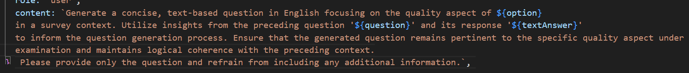

About Data
At the moment, the data collected by the survey is not being used anywhere except by the AI.
In the future I would hope to collect all the data in a protected database.
Furthermore, these are example surveys and do not represent any real time surveys.
SurveyGenie uses OPENAI API for its AI generated questions,
the data provided is the previous question,
and the user's response.
The prompt is shown in the following image.
